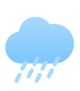

<div class="wrapper">
	<div class="content">

		<div class="header">
			<div class="city" *ngIf="!inputEnabled">
				<div class="city__title" *ngIf="currentCity">
					<span>{{currentCity}}</span>
				</div>
				<div class="city__footer">
					<div class="city__change" (click)="changeCity()">
						<span>Сменить город</span>
					</div>
					<div class="city__location" (click)="getCurrentLocation()">
						
						<span>Мое местоположение</span>
					</div>
				</div>
			</div>
			<div class="city__inputs"  *ngIf="inputEnabled">

				<input type="text" class="city__input" [formControl]="search">
				<button class="btn" (click)="submit()">OK</button>
			</div>
			<div class="header__radio">
				<div class="degree">°</div>
				<div class="radio-group">
					<input type="radio" name="celsius" value="C" id="celsius" checked="checked" (click)="changeTemp('C')"/>
					<label for="celsius">C</label>
					<input type="radio" name="celsius" value="F" id="fahrenheit" (click)="changeTemp('F')"/>
					<label for="fahrenheit">F</label>
				</div>
			</div>
		</div>

		<div class="body">
			<div *ngIf="weatherStatus" class="body__info">
				<div class="body__temp">
					<div  class="body__img" [ngSwitch]="weatherStatus">
						<ng-template ngSwitchCase="Mist"></ng-template>
						<ng-template ngSwitchCase="Clouds"></ng-template>
						<ng-template ngSwitchCase="Clear"></ng-template>
						<ng-template ngSwitchCase="Rain"></ng-template>
						<ng-template ngSwitchCase="Snow"></ng-template>
					</div>
					<div class="body__deg">
						<span>{{temp}}°</span>
					</div>
				</div>
				<div class="body__status">
					<div  class="body__img" [ngSwitch]="weatherStatus">
						<ng-template ngSwitchCase="Mist"><span>Туман</span></ng-template>
						<ng-template ngSwitchCase="Clouds">Облачно</ng-template>
						<ng-template ngSwitchCase="Clear">Преимущественно солнечно</ng-template>
						<ng-template ngSwitchCase="Rain">Дождь</ng-template>
						<ng-template ngSwitchCase="Snow">Снег</ng-template>
					</div>
				</div>
			</div>
		</div>

		<div class="footer">
			<div class="footer__column-left">
				<div class="footer__item">
					<span class="footer__title">Ветер</span>
					<div>
						<span>{{windSpeed}} м/с{{windDirection}}</span>
					</div>
				</div>
				<div class="footer__item">
					<span  class="footer__title">Давление</span>
					<div>
						<span>{{pressure}} мм рт. ст.</span>
					</div>
				</div>
			</div>
			<div class="footer__column-right">
				<div class="footer__item">
					<span class="footer__title">Влажность</span>
					<div>
						<span>{{humidity}}%</span>
					</div>
				</div>
				<div class="footer__item">
					<span class="footer__title">Вероятность дождя</span>
					<div>
						<span>{{clouds}}%</span>
					</div>
				</div>
			</div>
		</div>
	</div>
</div>